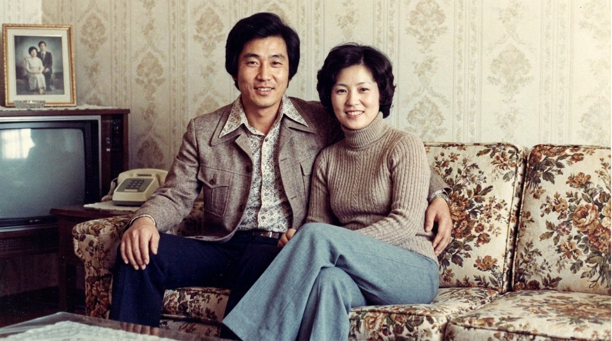

i. 가족의 책
자서전 — 한평생을 한 권에 담는 가족의 책
몇 가지 질문에 답하시기만 하면, AI가 어머니의 기억을 한 챕터씩 정리해 한 권의 책으로 묶어 드립니다. 글을 쓰지 않으셔도 괜찮습니다.

자서전 한 권이 시작이지만, 그 옆으로 블로그·사진·풍경·노래, 그리고 편지와 초상까지 함께 펼쳐집니다. 모두 같은 한 분의 한평생을 다른 결로 옮긴 모습입니다.
몇 가지 질문에 답하시기만 하면, AI가 어머니의 기억을 한 챕터씩 정리해 한 권의 책으로 묶어 드립니다. 글을 쓰지 않으셔도 괜찮습니다.
어머니의 일상과 생각을 짧은 글로 정리해, 가족이 매주 읽을 수 있는 블로그로 만들어 드립니다.
빛바랜 옛 사진의 색과 선명도를 정성스럽게 복원해, 한 장 한 장 다시 살려 드립니다.
어머니가 기억하시는 고향 풍경을 한 폭의 그림으로 그려 드립니다. 수채화·먹그림 중 선택.
어머니가 평생 즐겨 부르신 노래를 가족이 함께 듣고 보관할 수 있게 녹음해 드립니다.
자녀·손주·옛 이웃에게 남기고 싶은 마음을 한 통의 편지로 정리해 드립니다.

어머니가 기억하시는 가족·친구·이웃의 얼굴을 한 장의 초상화로 다시 살려 드립니다.
질문에 답하시기만 하면 됩니다. 글을 쓰지 않으셔도 괜찮습니다. AI동행이 듣고, 정리하고, 가족이 함께 읽을 한 권으로 묶어 드립니다.
AI동행이 어머니에게 한 번에 한 가지씩 천천히 여쭙니다. 말씀하신 답이 그대로 기록됩니다.
i. 평균 25분 — 한 챕터.
흩어진 기억의 조각을 시간 순으로 엮고, 가족이 읽기 좋은 호흡으로 다듬어 드립니다. 가족이 함께 검토할 수 있습니다.
ii. 한 챕터씩 — 가족과 공유.
완성된 원고는 양장본 책으로 인쇄해 가족 수만큼 보내 드립니다. 디지털 사본도 함께 보관됩니다.
iii. 약 30 — 60일 후 — 댁으로 배송.
어머니가 한 시간을 들이시면, 가족이 두고두고 펼쳐 볼 한 페이지가 남습니다. 네 가지 결과물의 모습을 책의 한 쪽씩 옮겨 두었습니다.
그해 봄에는 동백이 일찍 떨어졌다. 어머니는 그 길을 매일 걸어 학교에 가셨고, 교문 옆 우물 앞에서 친구를 기다리는 일이 하루의 가장 큰 즐거움이셨다고 한다. 그날 아침에도 어머니는 새 신을 신고 그 길을 걸으셨다 —
어머니의 구술을 AI동행이 정리한 한 챕터 일부.
어머니의 묘사를 토대로 그린 한 점 — 종이에 수묵.
어머니의 음성을 그대로 보관 — 1분 12초.
나도 너 키울 때는 매일이 처음이었다. 처음 안아 본 너의 무게, 처음 들은 너의 울음, 그게 다 어제처럼 선명해. 네가 이 편지를 받을 때쯤이면 엄마는 그 모든 이름을 잊고 있을지도 모르지만, 그래도 너 하나는 잊지 않겠다 —
어머니가 자녀에게 쓰는 한 통의 편지 — AI동행 정리본.
어머니, 아버지가 직접 만드신 한 챕터를 가족과 나누신 후의 소회입니다.
살아온 이야기를 누가 들어준다는 게 처음에는 부끄러웠는데, 다 끝나고 책으로 받아 보니 내가 살아온 시간이 책 한 권만큼은 됐구나 싶었어요. 손자가 책을 들고 와서 할머니 이거 진짜냐고 묻더군요.
나는 글을 잘 못 써서 못 할 줄 알았는데, 그냥 물어보는 대로 답하면 되더라고요. 한 챕터씩 가족이 같이 읽고 의견을 나눈 게 제일 좋았습니다.
딸이 선물로 보내준 거였어요. 처음엔 이 나이에 무슨 책이냐 했는데, 끝나고 나니 손녀딸 결혼식 때 한 권씩 나눠 주고 싶다는 생각이 들어요.
한평생 일만 하고 살았다 싶었는데, 정리해놓고 보니 내 인생도 꽤 괜찮았더라구요. 곁에 있는 사람들이 다 책 한 권씩은 가지고 있어야 합니다.
질문에 답하시기만 하면 됩니다. 글을 쓰지 않으셔도 괜찮습니다.
가족이 두고두고 펼쳐 볼 한 권의 책이, 오늘 한 줄에서 시작됩니다.